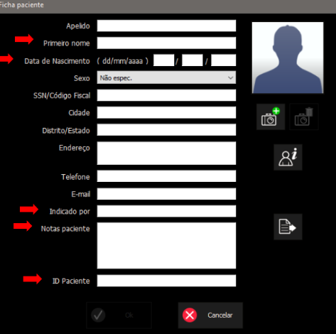

Acolhimento de Pacientes
O processo de acolhimento varia conforme a origem do paciente, e cada origem utiliza um software específico:
-
Paciente Interno (triagem realizada no HEO): utilizar o sistema AGHUSE
- Acesso: https://aghuse.odonto.ufrgs.br
-
Paciente Externo - Prefeitura de Porto Alegre: utilizar o sistema Gercon
- Acesso: https://gercon.procempa.com.br
-
Paciente Externo - Prefeitura de Viamão: utilizar o sistema GOVBR Saúde
- Acesso: https://viamao.celk.com.br
Os passos a seguir devem ser seguidos para todos os pacientes, independentemente da origem:
1. Preenchimento tabela Planilha de Exames no Google Drive
- No computador acolhimento do Serviço de Radiologia, crie um novo registro na tabela Planilha de Exames no Google Drive;
- Crie um ID sequencial, com base no último ID utilizado para o tipo de exame correspondente (último ID + 1).
2. Preenchimento no software NNT
A seguir estão as orientações para preenchimento da ficha do paciente no software NNT.

Campos obrigatórios e como preenchê-los
Primeiro nome
- Preencher com o nome completo do paciente.
Data de Nascimento
- Formato:
dd / mm / aaaa
Indicado por
Selecionar conforme a origem do paciente:
- Prefeitura de POA
- Prefeitura de Viamão
- Especialização de Ortodontia (outras)
- Clínica I
- Clínica II
- Clínica III
- Clínica IV
- Extensão
- Nome do professor responsável
Notas paciente
Registrar os exames solicitados:
- Tipo de exame:
- TC
- PAN
- Tele Frontal
- Tele Lateral
- Mão e Punho
- Outras técnicas extrabucais: Waters, Lateral Oblíqua
Registrar a justificativa:
- Justificativa: incluir a razão do exame
ID Paciente
- Informar o ID criado no passo 1, na tabela Planilha de Exames do acolhimento do Serviço de Radiologia.
Após preencher todos os campos, clique em OK para salvar ou Cancelar para descartar as alterações. Prossiga para a Aquisição de exames.